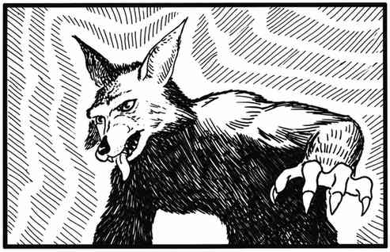

豺狗—豺狼人—美洲豹 Jackal–Jackalwere–Jaguar
豺狗 Jackal
| 项目 | 数据 |
|---|---|
| 出现频率 | 常见 |
| 出现数量 | 1–6 |
| 护甲等级 | 7 |
| 移动力 | 12 寸 |
| 生命骰 | 1–4 |
| 在巢穴概率 | 无巢穴 |
| 财宝类型 | 无财宝 |
| 攻击次数 | 1 次 |
| 攻击伤害 | 1–2 |
| 特殊攻击 | 无 |
| 特殊防御 | 无 |
| 魔法抗性 | 标准 |
| 智力 | 近乎动物 |
| 阵营 | 中立 |
| 体型 | S |
| 灵能能力 | 无 |
豺狗是生活在温暖地区的小型犬科食腐动物。它们并不凶猛，也不勇敢。之所以列在本书中，是因为它们会出现在魔法戏法袋中（见相关条目）。
豺狼人 Jackalwere
 |
|
豺狼人是人类的邪恶敌手：豺狗能够变成人形，常以人类外貌四处游荡，伺机杀害人类，再夺走财物并吞食尸体。它们会使用人类武器。任何未察觉其敌意、且未通过对抗魔法豁免检定的生物，都会受到其凝视影响，如同遭受睡眠术。注意：已经敌对的生物并非“未察觉”。豺狼人有时（20%）会与普通豺狗一同出现。
美洲豹 Jaguar
 |
|
美洲豹是极其凶猛的丛林掠食者，会攻击任何它们认为构成威胁的生物。若在巢穴中发现它们，有 75% 概率存在 1–3 只幼崽，成长程度为 10%–40%；幼崽无法有效战斗。饥饿时，它们会猎捕体型大得多的猎物，包括蛇与鳄鱼。美洲豹擅长攀爬和游泳，也能跃出 30 尺发动攻击。
近战中，美洲豹会用两只前爪抓住对手（同一近战轮内以两次爪击命中），再用后爪撕抓，每轮额外攻击两次，每次造成 2–5 点伤害。